A task app for the touch monitor inside an underground mining vehicle: the worker accepts jobs, logs the volume done and corrects shift records — underground, in gloves, on the move.
Company
RNT Group
Case Study
UX Research & Tablet UI
Platform
Astra OS (Linux), touch monitor
Demo
Nov 28, 2024
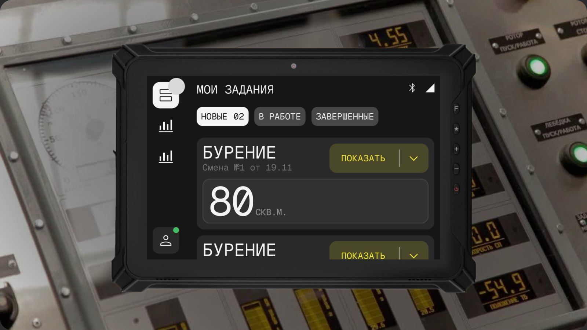
Design Team
Who worked on it
Core team
Iana VavilovaLead Designer
Marat IdrisovDesigner
Advisors
Yulia FokinaAdvisor, design system
Ivan MazaiAdvisor, domain expert
Aleksey RodinDelivery Manager
Partner designers
Zlata RubtsovaLead Designer
Anya SuvorovaDesigner
Sonya KivokuntsevaDesigner
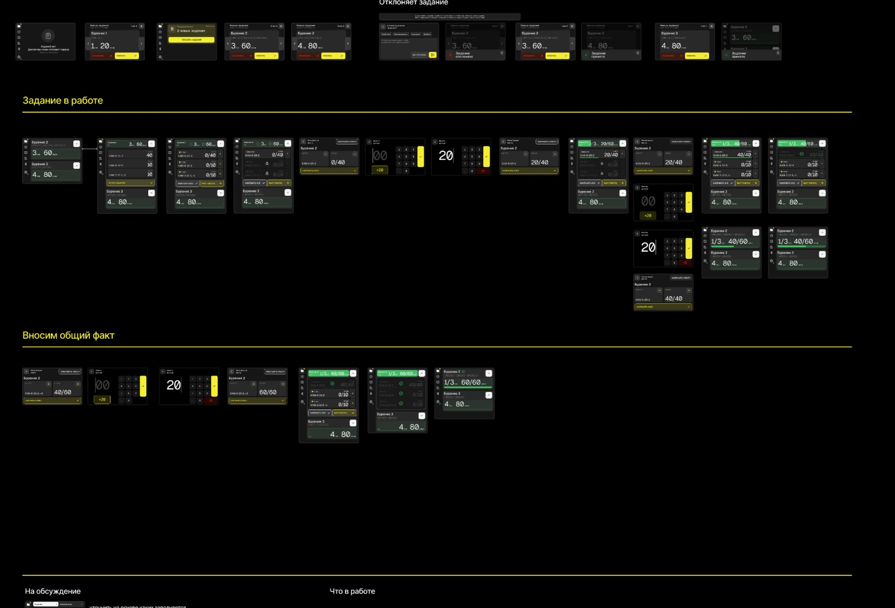
The Brief
Shift tasks without paper or radio calls
The goal: an app that automates task handling for Nornickel’s mine workers. Shift tasks arrive straight in the vehicle cab; the worker accepts or rejects them, and the completed volume is logged automatically or entered by hand.
In one sprint we audited the existing solution, learned the domain, studied the users and their working conditions, built a UI kit and designed the two core user flows.
Context of use
Platform — Astra OS (Linux), wired connection.
Device — touch monitor mounted in the vehicle cab.
Underground, behind armoured glass.
Used in gloves, goggles and a hard hat.
What we did
Sprint to the Nov 28 demo
Audit of the AS-IS solution and a deep dive into the domain.
Analysis of users and usage contexts.
UI kit and visual style.
User flow: the worker accepts a task and starts on it.
User flow: the worker reviews completed work and makes corrections.
Research
Users and their context
The worker sits in a drilling rig cab wearing a hard hat, goggles and gloves. The monitor is fixed to the dashboard behind impact-resistant glass, surrounded by cables, noise and low light. The target device hadn’t been chosen yet, so we tested several rugged tablets in the lab.
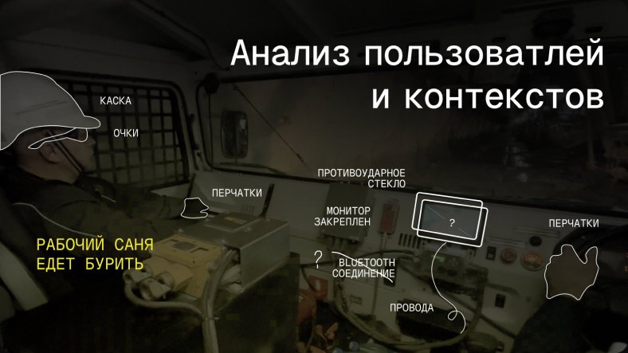
“Sanya heads off to drill”: hard hat, goggles, gloves, a mounted monitor, armoured glass, cables and Bluetooth.
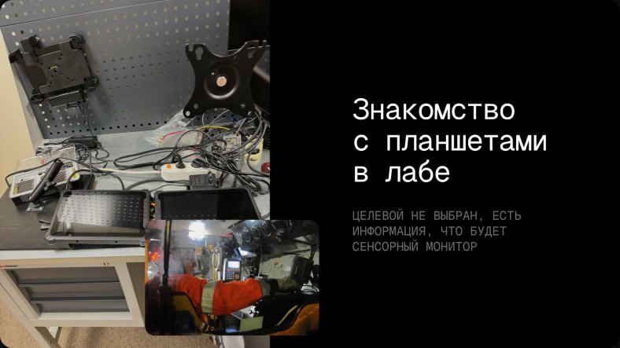
Hands-on with tablets in the lab: no target device yet, only that it would be a touch monitor.
Working conditions
High noise
Temperature extremes
Dust and dirt
Masks and gloves
Limited GPS
Leaving the cab
Darkness
Fixed-mount screen
Users
Who touches the task, and when
2–3 shifts a day, 8–12 h each · the mine runs 24/7
Morning 8–12Day 12–14Evening 14–16
Section chief
Shift plan → results review
Mining foreman
Assigns tasks to workers
Worker
Carries out tasks — our user
Dispatcher
Tracks the plan, redirects and changes tasks
Alexander, 55
Load-haul-dump machine operator · lives in Norilsk · married, two kids
Motivation and goals
Get paid
Follow rules and regulations
Hit the shift plan
Earn the bonus
What matters
As little interaction with the device as possible — ideally full automation.
25–55
years — age range of the core audience
What gets in the way
The main job comes first; no motivation to fill in data.
The process is new, so logging results feels like a barrier.
Express audit: UI / UX / business logic
Before → after
Large targets
Minimal nesting
Task progress at a glance
Automation
Contrast
Screen sleeps while driving
Before
Poor contrast
3.39
Many shades of blue, small text.
After
Strong contrast
15.78
Bright yellow on near-black, large type.
Before
Deep navigation
010203ПРИНЯТЬ
On the job, nobody wants to tap a thousand times.
After
One screen, one decision
Everything needed is on the first screen, with the fewest steps to a result.
Before
Lots of manual input
No motivation to fill things in — it has to be automated.
After
Automation, screen sleep
Volume comes from the sensor and the screen sleeps while moving, so it never distracts from the work.
User Flows
Two core flows
Step 01
Accept a task
New tasks land in the log. The worker expands a card, sees locations and metres, and accepts with one tap — no nested screens, no typing.
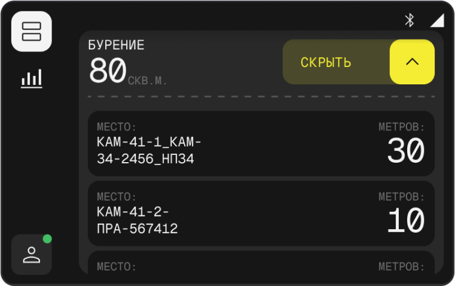
Step 02
Task in progress
A task in progress turns yellow and fills with progress as the sensor reports metres. When it’s done, a green “Finish” button appears.
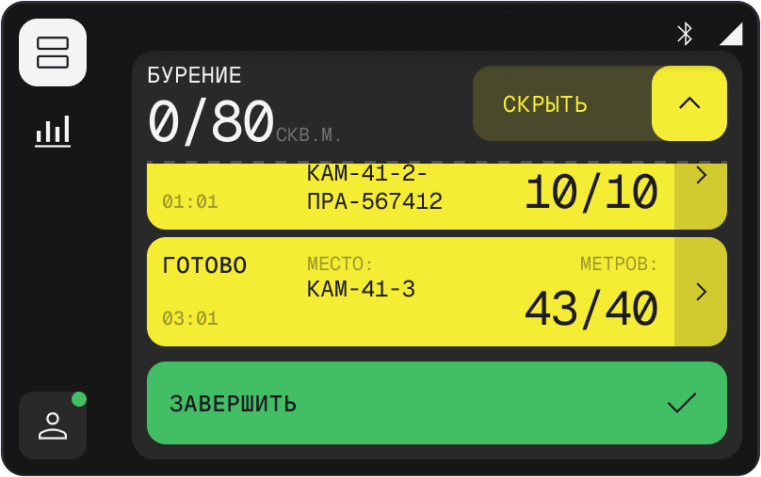
Step 03
Reject with a reason
If a task is wrong, the worker rejects it, picks a reason and adds a comment. A notification confirms the task went back to the dispatcher.
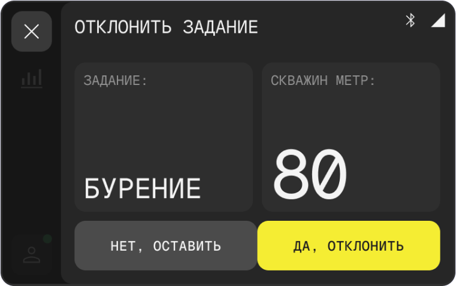
Step 04
Correct the volume
From the shift fact log the worker filters by work type, opens any card and, if the sensor miscounted, types the actual volume on a large keypad that works with gloves on.
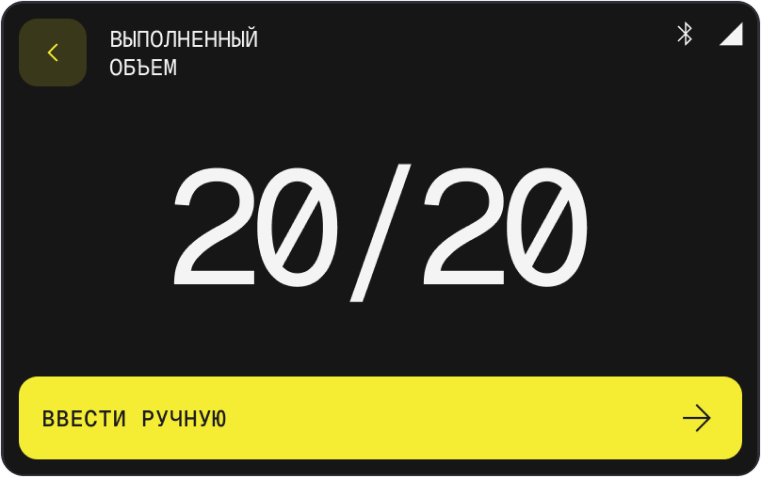
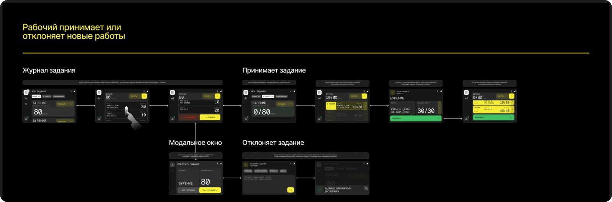
Flow 01 — the worker accepts or rejects new tasks
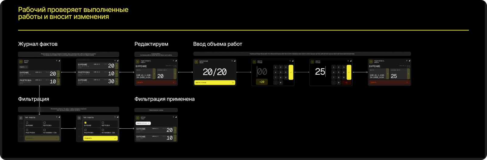
Flow 02 — the worker reviews completed work and makes corrections
UI kit & visual style
Yellow on black, like mine signage
The palette and shapes come from mining machinery: black and dark grey surfaces, signal yellow for actions, green for completion. Uppercase Geist Mono reads from a distance, and dense rounded buttons and cards are easy to hit with a gloved finger.
Palette
#000000Background
#292929Cards
#F5ED33Action
#42BE65Finish
#39381ASecondary
#F2F2F2Text
Typography
80Geist MonoUppercase, oversized numerals
AaSF Pro / InterPortfolio page copy
Buttons & states
БУРЕНИЕ · 80 СКВ.М. · КАМ-41-3⌄
НОВЫЕ 02В РАБОТЕЗАВЕРШЕННЫЕ
НЕТ, ОСТАВИТЬДА, ОТКЛОНИТЬ
ЗАВЕРШИТЬ ✓
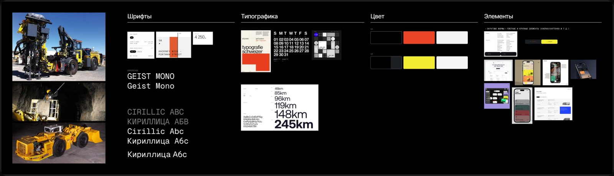
Moodboard: machinery, fonts, typography, two colour options and element references — rounded shapes, dense and large buttons and cards.